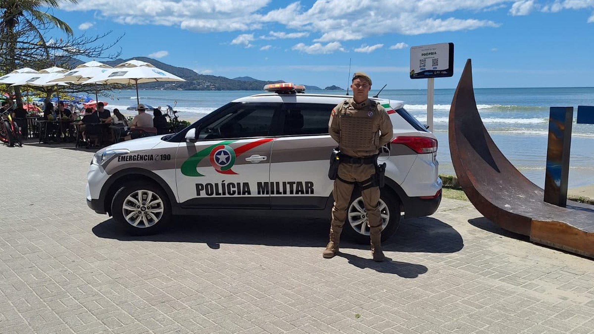

Itapema · Segurança
Itapema · SegurançaItapema fica com 10 dos 948 novos soldados temporários da Polícia Militar, e a lei que criou o posto proíbe esse policial de patrulhar com viatura, moto ou a cavalo
A chegada desses mesmos policiais, dez dias antes.
A Prefeitura publicou nesta segunda-feira que policiais militares temporários atuam no policiamento ostensivo de Itapema há cinco dias, o que põe o início em 14 de outubro. A conta é nossa. A formatura tinha sido em 9 de outubro, no 12º Batalhão, em Balneário Camboriú, também cinco dias antes. As duas atividades que a nota cita são patrulha preventiva e visita a estabelecimento comercial, e as duas cabem no limite da Lei Complementar 880, que no artigo 28 veda ao temporário o policiamento ostensivo com viatura, motocicleta ou montado.
Em 30 segundos · Modo de Leitura, formato original Santa Informa
A Prefeitura de Itapema publicou uma nota nesta segunda-feira, 19 de outubro.
Ela diz que policiais militares temporários estão no policiamento ostensivo da cidade.
E que isso acontece há cinco dias.
Cinco dias antes do dia 19 é o dia 14 de outubro.
Essa conta é nossa.
A formatura desses soldados foi em 9 de outubro.
Foi no 12º Batalhão, em Balneário Camboriú.
Entre o diploma e a rua passaram cinco dias.
A nota cita duas atividades.
Uma é o patrulhamento preventivo.
A outra é a visita a estabelecimento comercial.
Nas visitas o policial fala direto com o comerciante.
Orienta sobre prevenção e anota demanda de segurança.
Em 9 de outubro noticiamos aqui que Itapema ficaria com dez temporários.
Eram dez dos 948 formados em todo o estado.
E dez dos 78 formados naquela solenidade.
Eles vão para o 31º Batalhão, que atende Itapema.
A lei do posto é a Lei Complementar 880, de 5 de agosto de 2025.
Ela criou o Serviço Militar Estadual Temporário.
O artigo 28 lista o que o temporário não pode fazer.
O inciso IV veda policiamento ostensivo com viatura.
Veda também com motocicleta e montado.
O artigo 27 restringe o poder de polícia às funções exercidas.
O artigo 26 põe o contrato em 12 meses.
Ele pode ser prorrogado por igual período.
O teto é de 96 meses de serviço.
O artigo 4º diz para que o posto existe.
É para cobrir defasagem pontual de efetivo.
O artigo 12 exige autorização do Governador para cada vaga.
A nota de 19 de outubro não diz quantos dos dez estão na rua.
Não diz turno, nem bairro, nem quantas lojas foram visitadas.
O reforço estadual se soma à Guarda Municipal de Itapema.
Poder PúblicoPublicada em Redação Santa Informa

A Prefeitura de Itapema publicou nesta segunda-feira, 19 de outubro, que o 31º Batalhão de Polícia Militar conta com o reforço de policiais militares temporários que, há cinco dias, atuam no policiamento ostensivo na cidade. Cinco dias antes do dia 19 é o dia 14 de outubro, e essa conta é nossa. A formatura desses soldados tinha sido em 9 de outubro, no 12º Batalhão, em Balneário Camboriú. Entre o diploma e a rua, portanto, passaram cinco dias.
A Prefeitura cita duas atividades. A primeira é o patrulhamento preventivo. A segunda é a visita a estabelecimentos comerciais. Nessas visitas, diz o texto, os policiais falam direto com o comerciante, orientam sobre medidas de prevenção e anotam demandas de segurança do ponto. Para quem tem loja, quiosque ou mercado em Itapema, é essa a mudança concreta dos últimos cinco dias: a chance de receber um policial no balcão para conversar sobre segurança.
Em 9 de outubro contamos aqui que Itapema ficaria com dez dos 948 soldados temporários formados em Santa Catarina. Fomos ler de novo a Lei Complementar 880, de 5 de agosto de 2025, que criou o Serviço Militar Estadual Temporário. O artigo 28, inciso IV, veda ao temporário atuar em serviços de policiamento ostensivo com uso de viatura, motocicleta ou montado e especial. O artigo 27 acrescenta que o poder de polícia administrativa dele se restringe às funções efetivamente exercidas. As duas atividades que a nota descreve cabem dentro desse limite.
A mesma lei, no artigo 26, diz que o contrato do temporário dura 12 meses e pode ser prorrogado por igual período, sem passar de 96 meses de serviço efetivo. O artigo 4º explica para que o posto existe: ampliar o contingente em área com necessidade específica e reduzir defasagem pontual de efetivo. Já o artigo 12 exige autorização do Governador do Estado para cada vaga, a partir de proposta do Comandante-Geral da corporação.
A nota de 9 de outubro registrava que esse reforço estadual se soma ao trabalho da Guarda Municipal de Itapema, que vem recebendo investimento para pôr mais equipes na rua. O 31º Batalhão atende Itapema e se apresenta como o batalhão da Costa Esmeralda. Na nossa matéria daquele dia comparamos os dez soldados com o total do estado: eram 1,05% dos 948, e Itapema tem 1,07% da população catarinense.
O resumo de 30 segundos está no topo e a versão completa é o texto acima. Aqui ficam as três leituras da casa sobre o mesmo assunto.
Clara, a otimista
Dez policiais a mais numa cidade do tamanho de Itapema é gente de verdade na rua, e eles já estão lá desde o meio do mês passado para a conta que fizemos. Melhor ainda: a nota diz que parte do trabalho é entrar no comércio e conversar com quem está atrás do balcão. Quem tem loja sabe o quanto isso muda o dia, porque o comerciante passa a ter um rosto para procurar em vez de um número de telefone.
E o momento é bom. A cidade está se preparando para a temporada, quando a população de Itapema multiplica e o comércio da orla trabalha no limite. Reforço que chega em outubro pega justamente a curva de subida, e não a tempestade já instalada. Chegar antes é meio caminho.
Seu Prudêncio, o criterioso
Vale acompanhar o tamanho real desse reforço. A nota de 9 de outubro falou em dez soldados para o 31º Batalhão. A nota desta segunda fala em policiais temporários no plural, sem número, sem turno e sem área. São informações diferentes, e a segunda não confirma a primeira. Enquanto o número não aparece, o morador não consegue saber se a presença aumentou em dez ou em dois.
Merece atenção também o desenho do posto. A Lei Complementar 880 é clara: o temporário não faz policiamento ostensivo com viatura, com moto nem montado, e o poder de polícia dele se restringe às funções efetivamente exercidas. Isso não é defeito, é o projeto da lei. Mas muda o que esperar: o reforço é de presença a pé e de contato, não de equipe que atende ocorrência correndo. Uma sugestão útil seria o batalhão publicar, de tempos em tempos, quantos temporários estão escalados e em que região. Custa pouco e evita expectativa errada.
Dito isso, é justo reconhecer o benefício. Efetivo demora anos para entrar por concurso, e a lei criou um caminho mais rápido para cobrir defasagem pontual, com contrato de prazo definido e teto de serviço. Itapema recebeu dez desses soldados cinco dias depois da formatura, o que é rápido para padrão de administração pública, e a Prefeitura veio a público contar. Transparência e velocidade, as duas juntas, não são o comum.
Caco, o sarcástico
Itapema ganhou policiais que, por determinação da lei, não podem patrulhar de viatura, nem de moto, nem a cavalo. Ou seja: chegaram com o único meio de transporte que nunca quebra e nunca fica sem combustível.
Reclamação registrada: a nota conta que eles estão na rua há cinco dias e não conta quantos são. Então a gente sabe o tempo com precisão de calendário e o número com precisão de “vários”. É um jeito curioso de dar notícia, informar a parte que não muda nada e guardar a que muda.
Mas tá bom porque policial a pé entrando na loja conversa, e policial dentro da viatura passa. Tem coisa que só funciona devagar. Chama-se progresso: descobrimos que andar é uma tecnologia de segurança pública.
Fontes: A informação de que o 31º Batalhão de Polícia Militar conta com o reforço de policiais militares temporários que há cinco dias atuam no policiamento ostensivo em Itapema, e de que as atividades incluem patrulhamento preventivo e visita a estabelecimentos comerciais com contato direto com comerciantes, está em Policiais militares temporários reforçam o policiamento ostensivo e as ações preventivas em Itapema, nota da Prefeitura de Itapema publicada em 19 de outubro de 2026, aberta e lida por nós no mesmo dia. O número de dez policiais destinados ao 31º Batalhão, os 78 formados na solenidade do 12º Batalhão em Balneário Camboriú, os 948 soldados temporários formados em todo o estado e a menção à Guarda Municipal estão em Itapema recebe reforço de dez novos policiais militares, nota da mesma Prefeitura de 9 de outubro de 2026, reaberta e relida por nós em 19 de outubro. A vedação do policiamento ostensivo com viatura, motocicleta ou montado e especial está no artigo 28, inciso IV; a restrição do poder de polícia administrativa às funções efetivamente exercidas está no parágrafo único do artigo 27; o contrato de 12 meses prorrogável e o teto de 96 meses estão no artigo 26; os objetivos do regime estão no artigo 4º; e a exigência de autorização do Governador para o preenchimento das vagas está no artigo 12 da Lei Complementar nº 880, de 5 de agosto de 2025, cujo texto foi aberto e lido por nós no portal de legislação da Assembleia Legislativa de Santa Catarina em 19 de outubro. A data de 14 de outubro como início do patrulhamento, a conta de cinco dias entre a formatura e a rua e a comparação entre os dez soldados e o total do estado são contas nossas sobre essas duas notas. O histórico da chegada desses policiais, a leitura completa da Lei Complementar 880 e a comparação entre 1,05% dos 948 soldados e 1,07% da população catarinense estão em Itapema fica com 10 dos 948 novos soldados temporários da Polícia Militar, e a lei que criou o posto proíbe esse policial de patrulhar com viatura, moto ou a cavalo, nossa matéria de 9 de outubro de 2026. Não procuramos o 31º Batalhão de Polícia Militar para esta matéria, que foi escrita sobre as duas notas oficiais e sobre o texto da lei.
Itapema · SegurançaA chegada desses mesmos policiais, dez dias antes.
 Itapema · Poder Público
Itapema · Poder PúblicoOutra peça da segurança da cidade, com a conta em disputa.
 Itapema · Infraestrutura
Itapema · InfraestruturaQuando a ocorrência é de Defesa Civil, não de polícia.